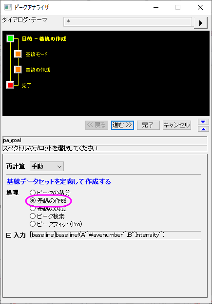
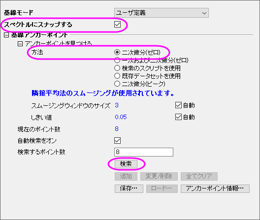
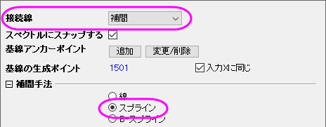
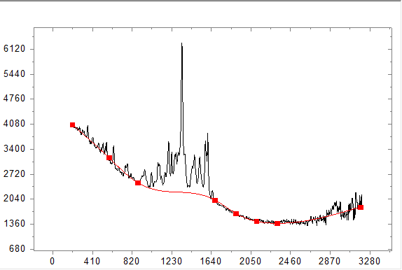
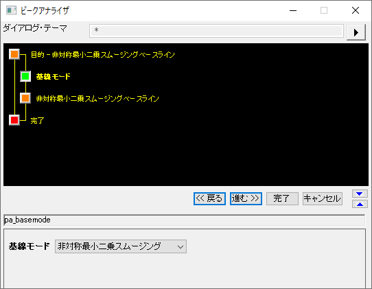
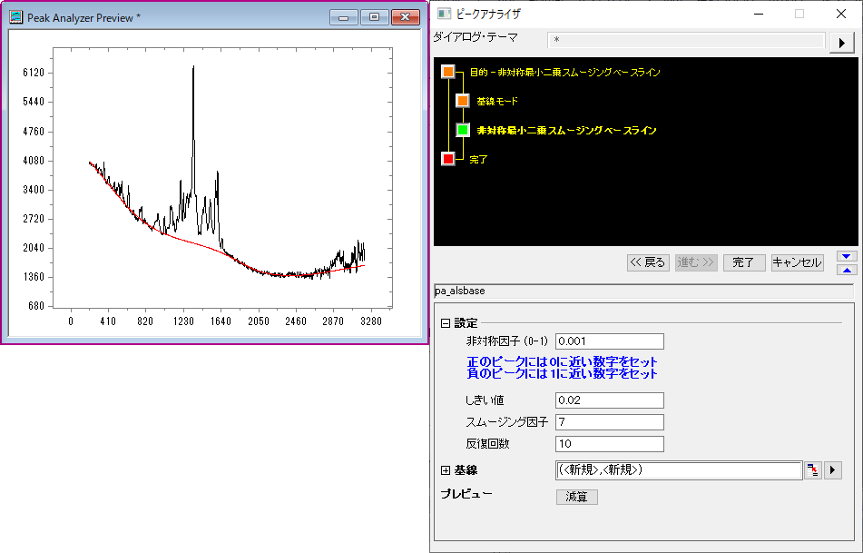
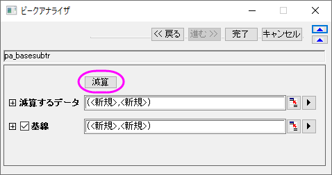
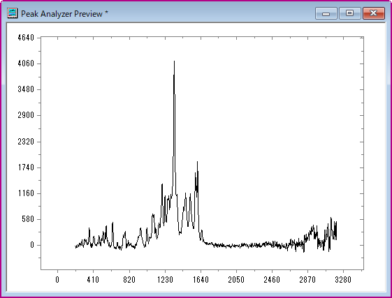

ピークアナライザで基線の追加と減算を行う
Create-Subtract-Baseline
サマリー
OriginProでは、ピークアナライザを使って、基線の作成または減算オプションを実行することができます。基線を作成する方法は複数あります。自動または手動でアンカーポイントを作成したり、補間を行ってアンカーポイントを接続したり、関数でフィットできます。
必要なOriginのバージョン: Origin 2016 SR0以降
学習する項目
- 二次微分方式での基線の追加
- 非対称最小二乗スムージング (ALS) 方式(Pro)での基線の追加
- スペクトルデータから基線を減算する方法
ステップ
二次微分方式での基線の追加
- 新しいワークブックを開き、<Origin EXE フォルダ>\Samples\Spectroscopy\Baseline.dat.ファイルをインポートします。2列目を選択します。メインメニューで、解析：ピークと基線：ピークアナライザを選択してピークアナライザのダイアログを開きます。
- ピークアナライザの初めのページ（ゴールページ）で処理グループ内の基線の作成を選びます。進むをクリックし、基線モードページに移動します。
- 
- 次に、このスペクトルに対するアンカーポイントを定義して、ユーザ定義の基線を作成します。基線モードページで、基線モードのドロップダウンリストからユーザ定義を選びます。スペクトルにスナップするにチェックをつけると、基線のアンカーポイントを追加したり移動した際にスペクトルにくっつくようになります。
- アンカーポイントを見つけるノードの中にある最初の2つの方法が最も頻繁に使われています。この2つの方法は、スペクトルの微分を元に自動的にアンカーポイントを見つけるので便利です。基線がおおよそ定数である場合、一次微分と二次微分の方がより強力ですが、それ以外の場合は二次微分を使用します。この例では、基線は曲線を描くため、二次微分（ゼロ）をアンカーポイントを探す方法として選択します。
- アンカーポイントを見つけるにある他の手法や関連するスムージングパラメータについては、こちらのリンク（基線モードページ）を参照してください。
- 
- 「基線アンカーポイント」グループで、検索ボタンをクリックします。プレビューウィンドウでアンカーポイントをプレビューできます。

- 進むをクリックして基線の作成ページに移動します。接続線ドロップダウンリストでは補間を選択します。補間手法のグループではラジオボタンでスプラインを選択します。スペクトルはプレビューウィンドウで確認できます。最後に完了ボタンをクリックして基線データを入手しましょう。
- 
- 
ALS方式での基線の追加(Pro)
- 基線モードのページからスタートし、基線方式で非対称最小二乗スムージング (ALS)を選択します。ALS基線アンカーポイントを事前に選択する必要なく、わずかなパラメーターだけで簡単に調整することが出来ます。
- 
- 進むをクリックして非対称最小二乗スムージングのページに進み、基線を最適化するためにパラメーターを調整します。結果テーブルとグラフを出力するために完了ボタンをクリックします。

スペクトルデータから基線の減算
- 基線を減算したい場合、一番最初のゴールページで基線の減算を選択してください。
- 基線を作成した後、基線の減算ページで進むボタンをクリックします。
- 減算をクリックすると基線を減算したスペクトルデータを見ることができます。このまま完了をクリックすると基線のデータと減算したスペクトルデータが出力されます。以下の画像は基線の減算ページと基線を減算したときのスペクトルデータです。
- 
- 